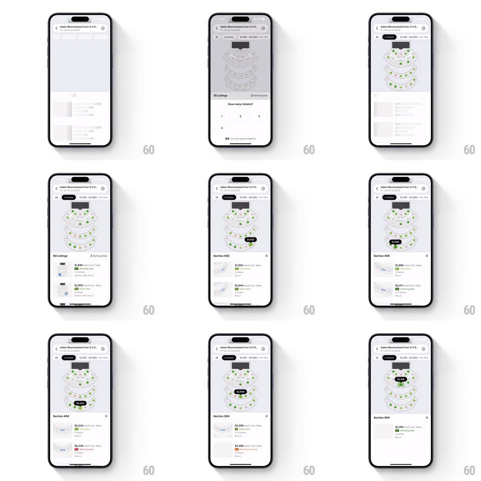

Media
Frame-by-frame

Rebuild this interaction 1:1: SeatGeek's seat picker - an event page (Adele) with a stadium seating chart of green availability dots, a price-range pill at top, a "How many tickets?" quantity selector, and springy price badges that pop on tapped sections with a synchronized listings bottom sheet.

Rebuild this interaction 1:1: SeatGeek's seat picker - an event page (Adele) with a stadium seating chart of green availability dots, a price-range pill at top, a "How many tickets?" quantity selector, and springy price badges that pop on tapped sections with a synchronized listings bottom sheet.
## Integration
Integration: stack-agnostic spec - springs given as stiffness/damping, timed motions as duration + curve; map every value to your framework and animation library of choice.
## Scene
Event detail header, then a tiered stadium map (concentric sections of dots, green = available). Top pill: price filter ("$1,928+"). Bottom sheet: "N Listings" with ticket rows (price, deal rating badge, section/row). Quantity selector: "How many tickets?" with 1-4 pills. Tapped section: a dark price badge ($2,699) pinned to the map, sheet retitled "Section 405" with an x.
## Motion spec
Pattern: map-to-sheet synchronized section picking.
- The map loads with dots fading in ring by ring (inner to outer, 400ms total, 80ms per ring).
- Tap a section: its dots brighten, a dark price badge pops above the section (scale 0.5 -> 1.05 -> 1, spring ~420/16), and the bottom sheet slides up one snap point (spring ~340/24), its title crossfading to "Section N" and its rows re-staggering (fade + 12px, 30ms apart).
- Tap a different section: the old badge shrinks away (150ms) as the new one pops - only one badge lives at a time; the sheet's rows crossfade-sort to the new section.
- Quantity pills: selected pill fills dark with a scale pulse (1 -> 1.08 -> 1, spring ~460/20); prices in badges and rows tick to the per-ticket total with a digit roll (200ms).
- Price-filter pill: dragging its range dim dots outside the band (opacity 0.25, 200ms) - the map itself filters live.
## Calibration
- Badge sits ON the map, sheet below it - two synced views of one selection, never a mode switch.
- Deal ratings (colored chips) render per row - the sheet is scannable without the map.
## Reduced motion
Badges fade; sheet snaps without spring; no dot staggering.
## Don't miss
- One badge at a time - the selection model is singular and the UI enforces it visually.
- The sheet re-stagger on section change is the sync signal - don't swap rows silently.